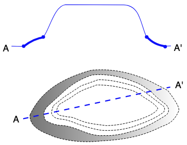

Vocabulary Patterns
Scope
This content is in intended to convey Best Practice patterns in vocabulary content
Audience
Technical vocabulary creators.
All the patterns documented here assume the use of the SKOS data model for vocabulary content and Semantic Web methods for data management and access.
Outcome
Technical vocabulary creators should learn both what KurrawongAI considers to be Best Practice for certain aspects of vocabulary content and also how KurrawongAI and other vocabulary creation and publication tools support the pattern.
Images
Can we use images for concepts in vocabularies?
Context
Some vocabularies lend themselves to the use of images to either define or explain the concepts they contain. For example, a vocabulary about road signs really should show images of the sign, not just describe them. Other vocabularies might like to exemplify concepts with images.
Solution
Yes we can use images with the following clarifications:
- there is more than one way
- different approaches require different system capabilities for authoring or displaying vocabs
Conceptual handling
Conceptually, we just link an image to a Concept within a vocab using an appropriate predicate. The SKOS Reference document's Notes section indicates that certain note predicates such as skos:example might be appropriate since the don't only have to be used with text, even though they usually are.
Note
If a Concept is actually defined by an image, it may seem appropriate to link directly to the image using the skos:definition predicated but we advise against this as it may be invalid for certain vocabulary profiles such as VocPub and may be hard for systems to implement. Instead use another predicate and describe how the image, indicated by the chosen predicate, is the defining part of the Concept in the definition field, in text.
We can also choose to use a non-SKOS predicate, especially common ones used for images, such as schema:image. This would allow the use of regular SKOS predicates, such as skos:definition, skos:example etc. for their common use and the image predicate is an extra.
The information about the images actually linked to by skos:example or schema:image can be one of the following:
- a web address - URL
- e.g.
https://upload.wikimedia.org/wikipedia/commons/4/4c/2019-07-29_172052_Rain_in_Berlin.jpg- a publicly available image on WikiMedia
- e.g.
- a local file path
- e.g.
images/germany/rain_in_berlin.jpg- only available on a particular system
- e.g.
- embedded image content
- e.g. an SVG image defined in XML text
- e.g. a hex-encoded raster image, like a JPG
- a Blank Node describing an image
There are pros and cons to each type of information listed above.
A web address is easy to record - just a predicate like schema:image pointing to the URL - but it will break if the image disappears offline, so the vocabulary has a dependency on the image's stability to keep working.
A local file path will only work if any tool publishing the vocabulary can access and on-deliver (render) the image.
An embedded image stays within the vocab's source data file, which means it can't ever be lost, but could be large: the JPG image linked to in the web address bullet above is 7.5MB as a JPEG but 137MB when converted to HEX which is a form of text encoding that can be used in an RDF file. This may only be appropriate for small vector images such as icons of map symbols.
Note
SVG creation: Since SVG is an open standard, many SVG authoring tools exist, such as Adobe products or the widely use, mature, free and open source Inkscape. Any of these tools can be used to create stand-alone SVG files which are just XML text files starting <svg..., like this:
<svg
xmlns="http://www.w3.org/2000/svg"
xmlns:inkscape="http://www.inkscape.org/namespaces/inkscape"
...>
<g ...>
...
</g>
</svg>
An example of a stand-alone SVG file created for a vocabulary is here - click on the "Download raw file" downward arrow, top right, to download the underlying source which can then be opened in a text editor.
{kind=link}
If we want to provide more information about the image than either just its embedded content or a link to its location, we can qualify it by linking to a Blank Node from which we can then link to remote content via a URL or local file path or to embedded content. From the same Blank Node, we can then also link to other information such as captions, copyright info, etc. See Examples below.
Examples
URL using schema:image
PREFIX : <http://example.com/>
PREFIX schema: <https://schema.org/>
PREFIX skos: <http://www.w3.org/2004/02/skos/core#>
PREFIX xsd: <http://www.w3.org/2001/XMLSchema#>
:dog
a skos:Concept ;
skos:prefLabel "Dog"@en ;
skos:altLabel "Domestic Dog"@en ;
skos:definition "The dog (Canis familiaris or Canis lupus familiaris) is a domesticated descendant of the gray wolf."@en ;
schema:image "https://en.wikipedia.org/wiki/Dog#/media/File:Chin_posing.jpg" ;
.
Note here the use of xsd:anyURI for a typed literal for the image link, as opposed to an IRI named node, which would be <https://en.wikipedia.org/wiki/Dog#/media/File:Chin_posing.jpg>. This is because the image is not part of the vocab's graph (the nodes in its data) but a link off to somewhere else.
Local file path using skos:example
PREFIX : <http://example.com/>
PREFIX skos: <http://www.w3.org/2004/02/skos/core#>
PREFIX xsd: <http://www.w3.org/2001/XMLSchema#>
:dog
a skos:Concept ;
skos:prefLabel "Dog"@en ;
skos:altLabel "Domestic Dog"@en ;
skos:definition "The dog (Canis familiaris or Canis lupus familiaris) is a domesticated descendant of the gray wolf."@en ;
skos:example "src/img/my_dog.jpg" ;
.
Embedded SVG image
In this example, the content of the Apron.s.svg file is stored as an XML literal value for the schema:image predicate in this Concept's RDF, i.e.
:apron schema:image """LONG-SVG-CONTENT"""^^rdf:XMLLiteral .
like this:
PREFIX : <http://example.com/>
PREFIX rdf: <http://www.w3.org/1999/02/22-rdf-syntax-ns#>
PREFIX schema: <https://schema.org/>
PREFIX skos: <http://www.w3.org/2004/02/skos/core#>
PREFIX xsd: <http://www.w3.org/2001/XMLSchema#>
:apron
a skos:Concept ;
skos:prefLabel "Apron"@en ;
skos:definition "An apron, in geology, is a fan-like accumulation of sediments that spreads outward from the base of a slope, such as the edge of a continental shelf, a submarine mountain, or an island. It's typically formed by gravity-driven processes like submarine landslides, debris flows, or turbidity currents."@en ;
schema:image """<svg xmlns="http://www.w3.org/2000/svg" xmlns:inkscape="http://www.inkscape.org/namespaces/inkscape" xmlns:sodipodi="http://sodipodi.sourceforge.net/DTD/sodipodi-0.dtd" xmlns:svg="http://www.w3.org/2000/svg" xmlns:xlink="http://www.w3.org/1999/xlink" width="97.118958mm" height="74.286232mm" viewBox="0 0 97.118957 74.286232" version="1.1" id="svg5" xml:space="preserve" inkscape:version="1.2.2 (b0a8486, 2022-12-01)" sodipodi:docname="apron.inkscape.svg" inkscape:export-filename="apron.png" inkscape:export-xdpi="96" inkscape:export-ydpi="96"><sodipodi:namedview id="namedview7" pagecolor="#ffffff" bordercolor="#666666" borderopacity="1.0" inkscape:showpageshadow="2" inkscape:pageopacity="1" inkscape:pagecheckerboard="0" inkscape:deskcolor="#ffffff" inkscape:document-units="mm" showgrid="false" inkscape:zoom="1.8380915" inkscape:cx="75.077873" inkscape:cy="204.01596" inkscape:window-width="2063" inkscape:window-height="1210" inkscape:window-x="133" inkscape:window-y="70" inkscape:window-maximized="0" inkscape:current-layer="layer1" /><defs id="defs2"><linearGradient inkscape:collect="always" id="linearGradient3584"><stop style="stop-color:#808080;stop-opacity:1;" offset="0" id="stop3580" /><stop style="stop-color:#808080;stop-opacity:0;" offset="1" id="stop3582" /></linearGradient><linearGradient inkscape:collect="always" id="linearGradient3522"><stop style="stop-color:#ffffff;stop-opacity:1;" offset="0" id="stop3518" /><stop style="stop-color:#ffffff;stop-opacity:0;" offset="1" id="stop3520" /></linearGradient><linearGradient inkscape:collect="always" xlink:href="#linearGradient3522" id="linearGradient3524" x1="64.030418" y1="96.847031" x2="143.43111" y2="96.847031" gradientUnits="userSpaceOnUse" /><linearGradient inkscape:collect="always" xlink:href="#linearGradient3584" id="linearGradient3586" x1="67.60627" y1="98.366364" x2="148.15862" y2="98.366364" gradientUnits="userSpaceOnUse" /></defs><g inkscape:label="img-top" inkscape:groupmode="layer" id="layer1" style="display:inline" transform="translate(-53.17203,-43.635959)"><text xml:space="preserve" style="font-size:4.93889px;line-height:0.95;font-family:sans-serif;display:inline;stroke-width:0.264583" x="145.31673" y="68.72187" id="text364" inkscape:label="A'"><tspan sodipodi:role="line" id="tspan362" style="font-size:4.93889px;stroke-width:0.264583" x="145.31673" y="68.72187">A'</tspan></text><text xml:space="preserve" style="font-size:4.93889px;line-height:0.95;font-family:sans-serif;display:inline;stroke-width:0.264583" x="53.109329" y="69.1222" id="text356" inkscape:label="A"><tspan sodipodi:role="line" id="tspan354" style="font-size:4.93889px;stroke-width:0.264583" x="53.109329" y="69.1222">A</tspan></text><path style="fill:none;stroke:#0000ff;stroke-width:0.265;stroke-linecap:butt;stroke-linejoin:miter;stroke-dasharray:none;stroke-opacity:1" d="m 57.779747,66.186502 6.271707,0.13344 m 10.942123,-5.20418 c 3.257361,-3.824489 5.768834,-16.591931 11.876208,-17.347268 l 31.491965,0.13344 c 9.02277,0.304639 8.97067,10.773129 12.27653,17.480709" id="path521" sodipodi:nodetypes="cccccc" inkscape:label="line thin" /><path style="fill:none;stroke:#0000ff;stroke-width:0.264583px;stroke-linecap:butt;stroke-linejoin:miter;stroke-opacity:1" d="m 140.51287,66.186502 3.20258,-0.13344" id="path523" inkscape:label="line thin" /><path style="display:inline;fill:none;stroke:#0000ff;stroke-width:1.065;stroke-linecap:butt;stroke-linejoin:miter;stroke-dasharray:none;stroke-opacity:1" d="m 64.37479,66.27375 c 3.51625,-2.756604 7.149616,-4.459157 10.919028,-4.937299" id="path1153" sodipodi:nodetypes="cc" inkscape:label="line thick" /><path style="display:inline;fill:none;stroke:#0000ff;stroke-width:1.065;stroke-linecap:butt;stroke-linejoin:miter;stroke-dasharray:none;stroke-opacity:1" d="m 130.64854,61.051609 c 2.69577,3.040226 5.97672,4.617491 9.6847,5.127193" id="path1155" sodipodi:nodetypes="cc" inkscape:label="line thick" /><ellipse style="fill:#0000ff;stroke:#0000ff;stroke-width:1.065;stroke-dasharray:none;paint-order:fill markers stroke;stop-color:#000000" id="path1209" cx="64.327316" cy="66.178802" rx="0.4272663" ry="0.37979227" inkscape:label="dot" /><ellipse style="fill:#0000ff;stroke:#0000ff;stroke-width:1.065;stroke-dasharray:none;paint-order:fill markers stroke;stop-color:#000000" id="path1209-8" cx="74.914024" cy="61.241501" rx="0.4272663" ry="0.37979227" inkscape:label="dot" /><ellipse style="fill:#0000ff;stroke:#0000ff;stroke-width:1.065;stroke-dasharray:none;paint-order:fill markers stroke;stop-color:#000000" id="path1209-6" cx="130.64854" cy="61.241505" rx="0.4272663" ry="0.37979227" inkscape:label="dot" /><ellipse style="display:inline;fill:#0000ff;stroke:#0000ff;stroke-width:1.065;stroke-dasharray:none;paint-order:fill markers stroke;stop-color:#000000" id="path1209-7" cx="140.61809" cy="66.463654" rx="0.4272663" ry="0.37979227" inkscape:label="dot" /></g><g inkscape:groupmode="layer" id="layer2" inkscape:label="img-bottom" transform="translate(-53.17203,-43.635959)"><text xml:space="preserve" style="font-size:4.93889px;line-height:0.95;font-family:sans-serif;display:inline;stroke-width:0.264583" x="145.98393" y="89.004837" id="text418" inkscape:label="A'"><tspan sodipodi:role="line" id="tspan416" style="font-size:4.93889px;stroke-width:0.264583" x="145.98393" y="89.004837">A'</tspan></text><text xml:space="preserve" style="font-size:4.93889px;line-height:0.95;font-family:sans-serif;stroke-width:0.264583" x="58.580395" y="107.41962" id="text360" inkscape:label="A"><tspan sodipodi:role="line" id="tspan358" style="font-size:4.93889px;stroke-width:0.264583" x="58.580395" y="107.41962">A</tspan></text><path style="display:inline;fill:url(#linearGradient3586);fill-opacity:1;stroke:#000000;stroke-width:0.264583px;stroke-linecap:butt;stroke-linejoin:miter;stroke-dasharray:1.05833, 0.529166;stroke-dashoffset:0;stroke-opacity:1" d="m 67.792919,103.20855 c 4.599387,-9.503289 12.289063,-18.282292 32.946981,-24.021863 12.12077,-1.108928 23.16637,1.62207 33.51667,6.836262 l 7.78574,4.082767 c 5.60824,7.500866 6.29687,9.877152 5.88678,11.108924 -3.26483,7.38071 -7.18384,7.23836 -10.91903,9.20996 -10.4388,5.06006 -20.66991,6.38166 -30.85812,6.93121 -8.988417,1.01278 -17.470444,0.2532 -25.446082,-2.27875 -3.993675,-1.7923 -8.342705,-2.87389 -11.393767,-6.55142 -0.969389,-1.49456 -1.797623,-3.07382 -1.519172,-5.31709 z" id="path1315" sodipodi:nodetypes="cccccccccc" /><path style="fill:#ffffff;stroke:#000000;stroke-width:0.264583px;stroke-linecap:butt;stroke-linejoin:miter;stroke-dasharray:1.05833, 0.529166;stroke-dashoffset:0;stroke-opacity:1" d="m 77.002882,98.84094 7.026159,-6.361523 c 6.083988,-5.950949 11.770322,-8.985769 17.280549,-10.729132 7.06531,-0.658765 14.47992,0.42898 22.31279,3.608028 3.72737,1.172182 6.59804,3.415237 9.58976,5.506987 2.25277,2.747834 5.17529,4.825911 7.97564,7.026159 1.78653,2.133421 1.66729,3.949211 0,5.506991 -5.84246,3.73718 -11.81949,7.17831 -18.60982,8.83017 -4.73149,1.40464 -9.60474,2.49032 -15.09675,2.1838 -4.68506,0.4466 -8.787537,-1.24294 -12.912934,-2.84844 -3.291533,-1.31082 -6.583066,-2.39442 -9.874599,-2.5636 -2.973433,-0.1711 -5.85874,-1.04722 -8.640276,-2.75349 -0.801585,-2.11557 -1.789119,-4.17242 0.949481,-7.40595 z" id="path1313" sodipodi:nodetypes="ccccccccccccc" /><path style="fill:none;stroke:#000000;stroke-width:0.264583px;stroke-linecap:butt;stroke-linejoin:miter;stroke-dasharray:1.05833, 0.529166;stroke-dashoffset:0;stroke-opacity:1" d="m 80.326065,98.366198 5.317093,-4.367612 9.589754,-6.36152 9.304908,-3.323183 c 6.87816,-0.02477 12.86259,1.55916 18.79972,3.228235 3.15956,1.049802 5.56485,2.853877 7.97564,4.652457 l 8.35543,6.36152 c 1.08339,1.20359 0.597,2.210955 0.18989,3.228235 -5.75066,4.27882 -11.03758,5.77526 -16.42601,7.88069 -5.95586,1.84631 -11.51884,2.25204 -16.90076,1.99391 -4.43091,-0.61103 -8.861819,-1.94866 -13.292729,-3.51308 -3.048129,-1.29307 -6.066741,-2.40904 -8.925118,-2.5636 -2.056026,-0.26064 -4.013977,-0.70108 -4.937299,-3.03834 -0.0801,-1.26037 0.477077,-2.733171 0.949481,-4.177712 z" id="path1311" sodipodi:nodetypes="cccccccccccccc" /><path style="display:inline;fill:none;stroke:#000000;stroke-width:0.264583px;stroke-linecap:butt;stroke-linejoin:miter;stroke-dasharray:1.05833, 0.529166;stroke-dashoffset:0;stroke-opacity:1" d="m 83.459351,97.701562 6.836261,-4.082767 c 5.777343,-4.396213 9.074888,-4.659428 13.292728,-6.456468 6.61438,-0.124928 12.94692,1.15935 19.17951,2.943389 3.01596,1.078699 4.8098,2.646247 6.93121,4.082767 2.75815,1.611792 5.31325,3.325107 6.93121,5.506989 -0.34477,2.947598 -9.78734,6.397208 -15.85633,7.785738 -3.89858,0.98424 -7.87315,1.58855 -11.96346,1.61412 -5.18319,-0.71088 -10.546343,-1.06185 -15.001788,-3.22823 -1.726601,-0.57796 -3.163168,-1.54263 -5.412042,-1.42422 l -4.082767,-0.75959 c -1.426529,-0.31511 -1.879655,-1.21426 -2.373701,-2.08886 0.398131,-1.838918 0.929823,-3.010025 1.519169,-3.892868 z" id="path1309" sodipodi:nodetypes="ccccccccccccc" /><path style="display:inline;fill:url(#linearGradient3524);fill-opacity:1;stroke:#0000ff;stroke-width:0.565;stroke-linecap:butt;stroke-linejoin:miter;stroke-dasharray:2.825;stroke-dashoffset:0;stroke-opacity:1" d="M 64.089946,105.39236 143.37158,88.301702" id="path1301" inkscape:label="line" /></g></svg>"""^^rdf:XMLLiteral ;
.
This example embeds the following simple image and yet the SVG literal used is large (long):

Image Object
Here a whole image object with multiple properties given to include a caption and a copyright notice as well as the link to the stored image file. The image object is indicated with use of a schema.org's schema:ImageObject class and other schema.org predicates are used for the other information:
PREFIX : <http://example.com/>
PREFIX schema: <https://schema.org/>
PREFIX skos: <http://www.w3.org/2004/02/skos/core#>
PREFIX xsd: <http://www.w3.org/2001/XMLSchema#>
:dog
a skos:Concept ;
skos:prefLabel "Dog"@en ;
skos:altLabel "Domestic Dog"@en ;
skos:definition "The dog (Canis familiaris or Canis lupus familiaris) is a domesticated descendant of the gray wolf."@en ;
skos:example [
a schema:ImageObject ;
schema:contentLocation "src/img/my_dog.jpg" ;
schema:caption "Fido, Nicholas' dog" ;
schema:copyrightNotice "© Nicholas Car, 2025" ;
] ;
.
Discussion
There are several ways to associate images with Concepts in SKOS vocabularies and each have different pros and cons. Be sure to determine how your target vocabulary creation / management / publication systems handle images too.
Related
Systems
The following is a list of KurrawongAI-supported vocabulary systems that have some image capability:
- VocExcel
- for the creation of vocabs
- VocExcel v0.8.0, due for release in Jun, 2025, will contain an
skos:exampleslot for Concepts that can be used to link to an image via URL
- VocEdit
- for the creation of vocabs
- VocEdit already (May 2025) supports adding any predicated and literal values to Concepts, so the URL and local file path methods can be used now
- the July 2025 release of VocEdit will support uploading small SVG files for the values of
skos:exampleorschema:imagepredicates
- Prez
- for the display of images in vocabs
- already supports rendering of embedded SVG images
- see an example: the KurrawongAI Image Test vocab Concept of 'Plane'
- will soon support loading of remote images linked to via URL
Identifiers
Each Concept must have a unique identifier that can be looked up in an application or on the web. An IRI, or Internationalized Resource Identifier, is recommended here for identifying vocabulary concepts.
IRIs are web identifiers (often expressed as URLs) that:
- can be used in data to identify things without necessarily resolving to a web page
- can be managed with domain name ownership
- allow for a specified range of characters, e.g. non-English alphabets
- have validation rules similar to web addresses (URLs), e.g. no spaces
An IRI for a skos:Concept typically follows a pattern such as:
- http:// [vocab subdomain] . [authority / domain] . [vocabulary name] . [concept ID]
Here's a real example from a published vocabulary:
http://vocabulary.curriculum.edu.au/scot/15326
... where:
http://- it's on the web!vocabulary- subdomaincurriculum.edu.au- managed or owned domainscot- vocabulary identifier, and15326- concept ID
What is the concept that has 15326 as an identifier? You need to look it up on the web! The rationale for using http identifiers is so that concepts can be looked up on the web by anyone, anywhere (and by anything - humans, browsers etc.).
Suffix patterns
The Concept ID is the trailing part of an IRI, or the suffix. Here we discuss advantages of different methods for minting an IRI suffix.
Increment suffixes
The above example IRI uses an increment method for generating an IRI suffix - we might expect the next IRI minted in this vocabulary to have the suffix 15327, and then 15328 and so on. This incremented number is opaque - we can't tell what the Concept is by looking at this number. This ID could be used for a skos:Concept in different vocabulary, but the IRI as a whole is unique.
Advantages of incremented IDs include: - Simple to generate - in smaller vocabularies, increments can be applied manually; - semantically opaque: language neutral (so labels are not 'anchored' to the IRI and can be updated as needed) - structurally opaque: increments do not indicate semantic relationships to other concepts (ensuring flexibility in structural editing) - system generated token IDs will often follow an incremented pattern, which can be reused as IRI suffix
Disadvantages of incremented IDs include: - evidence (but not proof) of when an ID was minted (i.e. suggests that higher numbers were added more recently). Systems and workflows relying on increments to reflect real workflows are prone to error - deprecated concepts result in a 'series' gap, where increments are relied upon to indicate concept generation order
UUID suffixes
Here's an IRI with a very different kind of suffix:
http://vocabulary.curriculum.edu.au/crossCurriculum/f7f47140-a85e-498b-9367-0d468082fc2b
The suffix here is a UUID, or a Universally Unique Identifier. Note that if we took the UUID out of context (removed the IRI stem), we could safely consider the UUID to be unique on its own terms - UUIDs are designed that way.
💡 A UUID can be freely generated using online tools. You can also quickly generate UUIDs for multiple rows with a spreadsheet formula.
Advantages of UUID suffixes include: - Always unique - even if IRI stem changes from mydomain/vocabName/ to myNewDomain/vocabOtherName, the IRI suffix can be relied on for processing current and legacy identifiers - semantically opaque (as for Increment IRIs) - structurally opaque: (as for Increment IRIs) - device and workflow independent generation - can be generated at any time in any context, without risk of collision (e.g. two identical IRIs are minted by parallel workflows)
Disadvantages of UUID suffixes include: - Quote-ability - human users cannot easily refer to UUIDs in unstructured communications, where a well-known code system may be in use; likewise, machine-users must resolve the IRI to get any information - Character length - a UI challenge for some information systems that usually render shorter ID
💡 Familiar, shorter codes from legacy data may be retained in the
skos:notationproperty in addition to using a very opaque pattern for IRIs. If the skos:notation values are unique within a vocabulary, a server can be configured to accept an alternative IRI request, e.g.myvocab/[UUID]=myvocab/[skos:notation]
Preferred Label suffixes
A third method for constructing a Concept ID is to base the ID on whatever skos:prefLabel has been chosen. This makes the IRI itself readable and understandable by humans, for example:
https://data.idnau.org/pid/vocab/org-indigeneity/run-by-indigenous-persons
... where:
- org-indigeneity is the ID for the vocabulary, and
- run-by-indigenous-persons is the ID for the concept, and
- "Run by Indigenous persons" is the skos:prefLabel
The preferred label method is not recommended. Why? What if the skos:prefLabel for this concept changes to Managed by indigenous persons? The IRI stays the same (they should be persistent), and now doesn't match (exactly) the skos:prefLabel, which could cause some confusion. A similar problem is encountered if the concept has multiple labels in different languages - which one should be used as an IRI suffix? IRIs are more robust if the Concept ID suffix is opaque (meaning non-semantic: they don't say anything about the concept itself).
💡 Principle: Concept identifiers should be opaque and persistent.
Hierarchical suffixes
An IRI pattern that indicates a level or position in a vocabulary hierarchy is sometimes adopted. Here's a hypothetical example:
PREFIX skos: <http://www.w3.org/2004/02/skos/core#>
<https://vocab/mydomain/termid/111633>
a skos:Concept ;
skos:prefLabel "Work Health and Safety Manager"@en ;
skos:broader <https://vocab/mydomain/termid/1116> ;
.
... where the suffix 1111633 implies membership within the broader concept <.../1116>. What if a decision is made to move this concept to another part of the vocabulary (that is, to remove this skos:broader relationship and replace with a new one (such as "<.../26>")? Like the re-labelled example above, the mismatch between the IRI and the change in position could cause confusion.
Version IRI
A supplementary IRI may be added that indicates the version of a skos:ConceptScheme, e.g. "1.1". A version IRI may be used, for example:
PREFIX owl: <http://www.w3.org/2002/07/owl#>
PREFIX skos: <http://www.w3.org/2004/02/skos/core#>
<https://data.idnau.org/pid/licenses>
a skos:ConceptScheme ;
# [...]
owl:versionIRI <https://data.idnau.org/pid/licenses/1> ;
skos:prefLabel "Data Licenses"@en .